Practica 4.1¶
Instalación de un servidor DNS¶
Tenemos que escribir el siguiente comando:
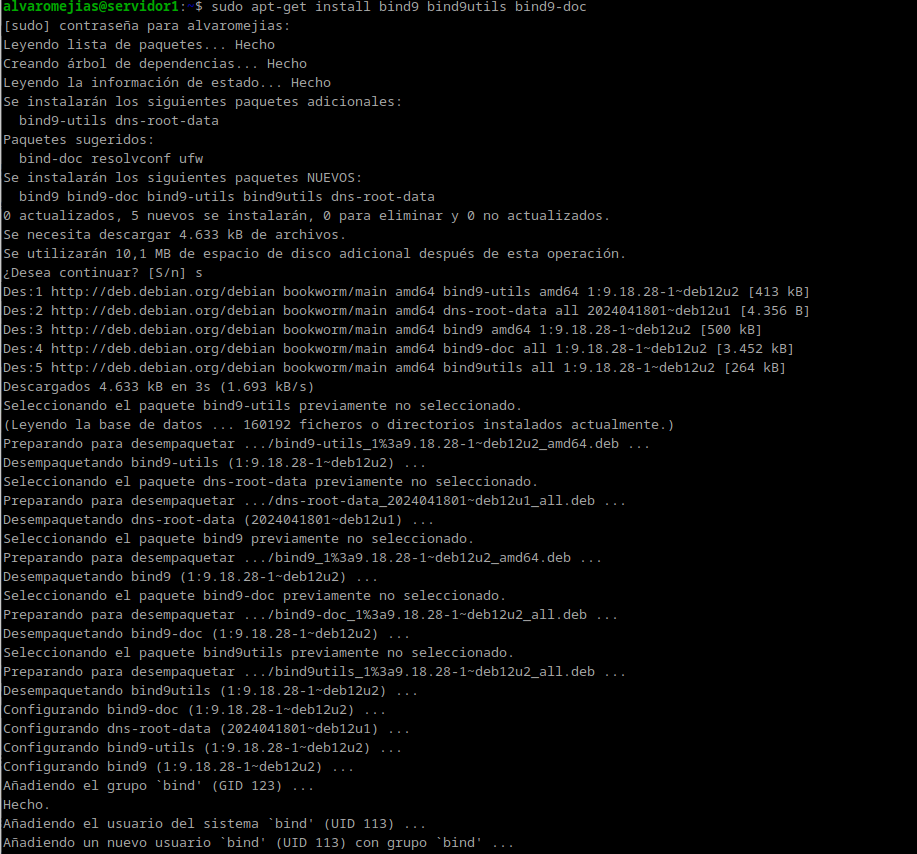
Configuración del servidor¶
Tendremos que modificar el archivo /etc/default/named
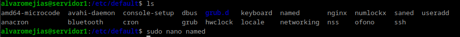
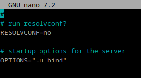
En OPTIONS= escribimos lo siguiente:
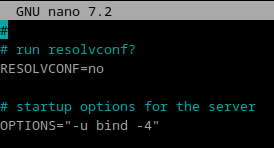
Una vez hecho esto, podemos instalar nodejs:
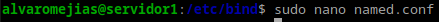
Aquí podemos encontrar los 3 archivos que vamos a modificar a lo largo de la práctica.
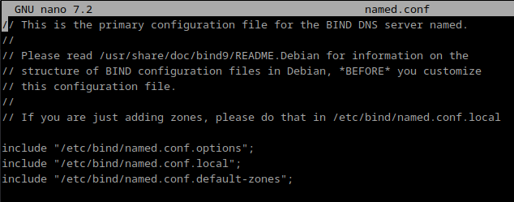
Realizamos una copia del archivo named.conf.options:
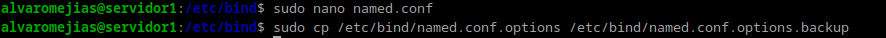
Y ya podemos modificar el archivo sin miedo.
Antes de options escribimos lo siguiente, rellenándolo con nuestra ip propia.
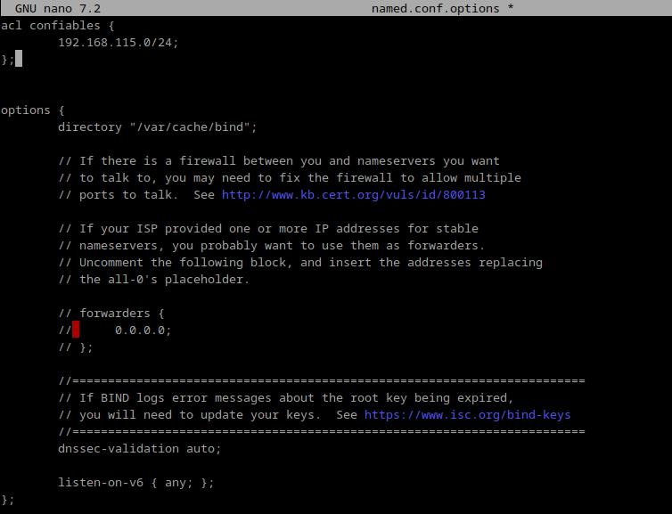
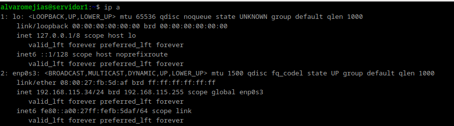 Nota: esa es mi IP
Y tras forwarded ponemos las siguientes opciones:
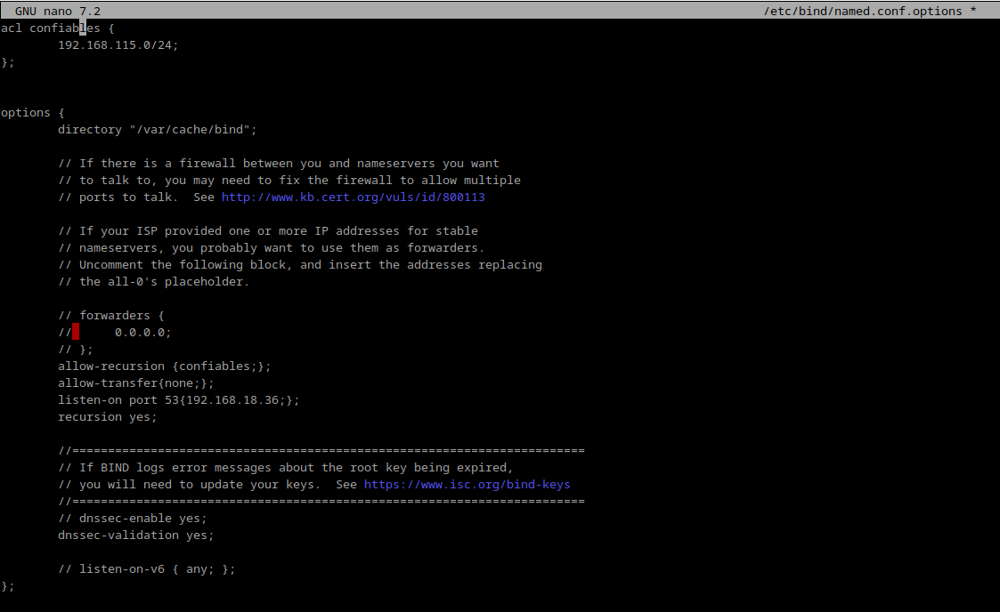
Podemos comprobar que hasta ahora todo funciona correctamente con el siguiente comando:
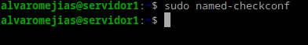
Y ahora reiniciamos el servicio y comprobamos el estado:
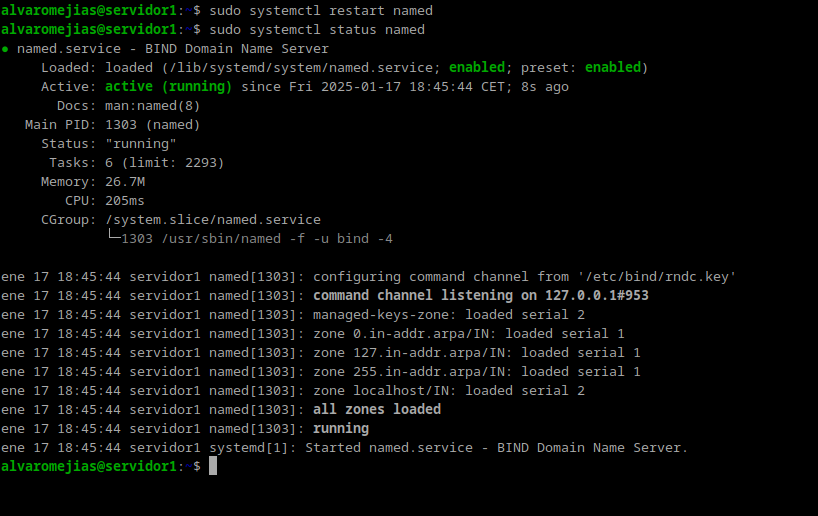
Ahora debemos modificar el archivo /etc/bind/named.conf.local
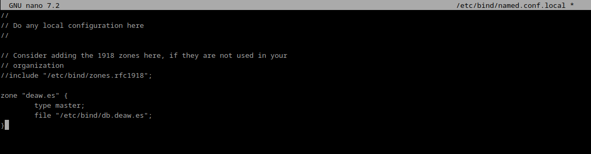
Creación del archivo de zona (resolución directa e inversa)¶
En la captura se muestra como se crea la zona, ahora sólo necesitamos el archivo de zona.
El nombre del archivo será db.deaw.es, que es el nombre que le hemos dado a la zona en /etc/bind/named.conf.local.
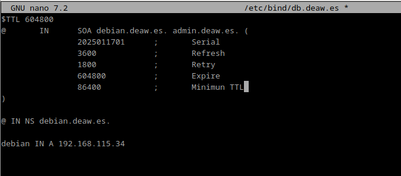 Nota: se le puede dar cualquier valor numérico al serial, aunque se recomienda usar el año, mes, día y versión.
Debemos crear un archivo de zona para la resolución inversa, pero antes creamos la zona en /etc/bind/named.conf.local.
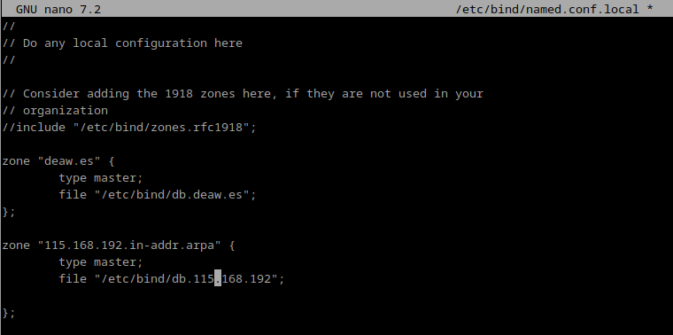
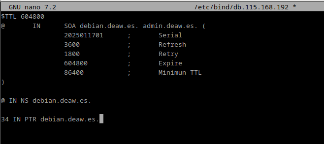
en mi caso lo llamaré db.115.168.192 porque es mi dirección IP inversa sin contar el último byte.
Comprobación de las configuraciones¶
Comprobamos que tanto la resolución directa e inversa se han configurado correctamente con el siguiente comando:
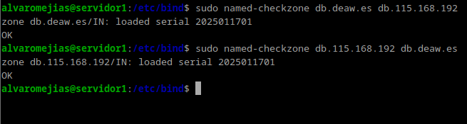
Y reiniciamos el servicio de nuevo:
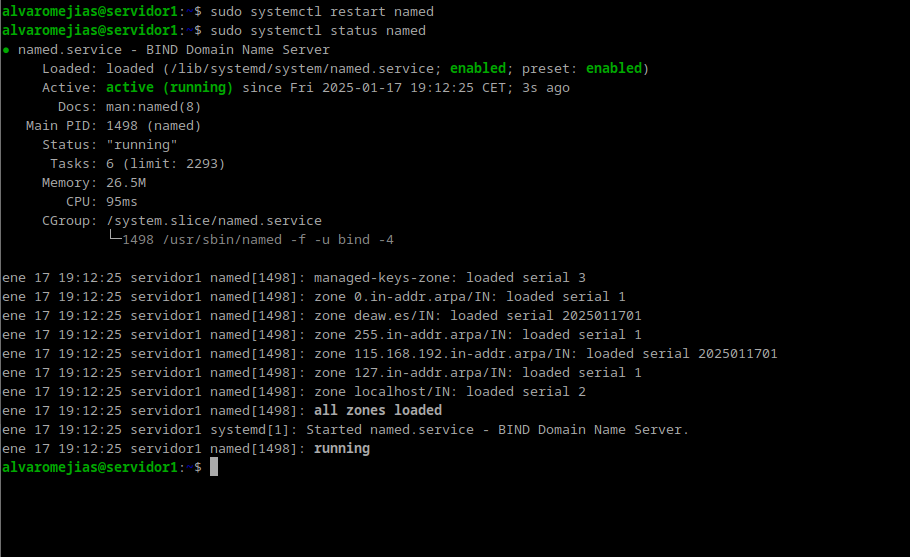
Abrimos otra máquina virtual a modo de cliente (o lo hacemos desde nuestra propia máquina) y creamos el siguiente archivo de configuración:
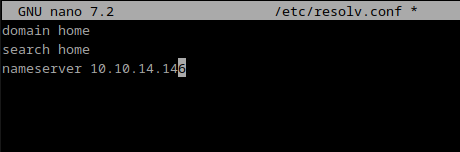 Nota: En nameserver ponemos nuestra dirección IP correspondiente
Introducimos los siguientes comandos:
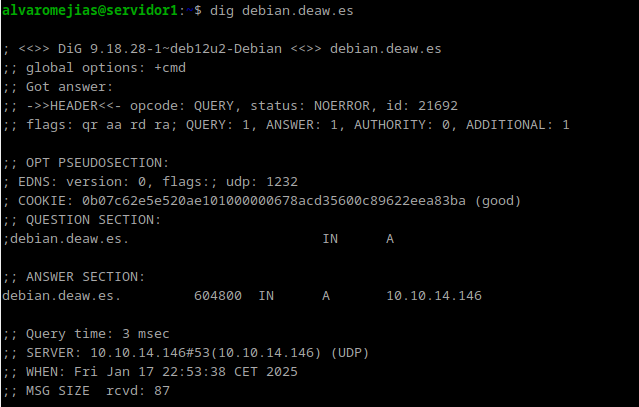
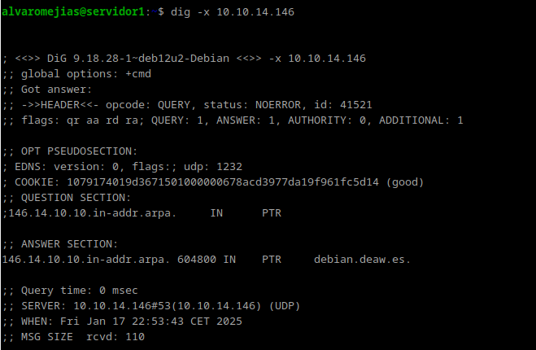
Como se puede comprobar, funciona todo correctamente.
Cuestiones Finales¶
Cuestión 1¶
¿Qué pasará si un cliente de una red diferente a la tuya intenta hacer uso de tu DNS de alguna manera, le funcionará?¿Por qué, en qué parte de la configuración puede verse?
No funcionará, ya que en la configuración se ha indicado: allow-recursion{confiables;};
Cuestión 2¶
¿Por qué tenemos que permitir las consultas recursivas en la configuración?
Porque sin recursión no resolvería nombres externos.
Cuestión 3¶
El servidor DNS que acabáis de montar, ¿es autoritativo?¿Por qué?
Sí, se ha introducido type master; y recibe registros DNS de una sola zona específica.
Cuestión 4¶
¿Dónde podemos encontrar la directiva $ORIGIN y para qué sirve?
En los archivos de zona. Establece el dominio base para los registros.
Cuestión 5¶
¿Una zona es idéntico a un dominio?
No, un dominio es un nombre dentro del sistema DNS. Una zona es una parte de un dominio gestionada por un servidor DNS específico.
Cuestión 6¶
¿Pueden editarse los archivos de zona de un servidor esclavo/secundario?
No, los servidores secundarios obtienen los datos de un servidor maestro mediante transferencias de zona.
Cuestión 7¶
¿Por qué podría querer tener más de un servidor esclavo para una misma zona?
Para mejorar la redundancia y la disponibilidad. Si un servidor secundario falla, los otros servidores secundarios pueden seguir respondiendo a las consultas.
Cuestión 8¶
¿Cuántos servidores raíz existen?
Existen 13 servidores raíz.
Cuestión 9¶
¿Qué es una consulta iterativa de referencia?
Una consulta en la que un servidor DNS responde con la mejor información que tiene.
Cuestión 10¶
En una resolución inversa, ¿a qué nombre se mapearía la dirección IP 172.16.34.56?
56 IN PTR + [nombre_host].